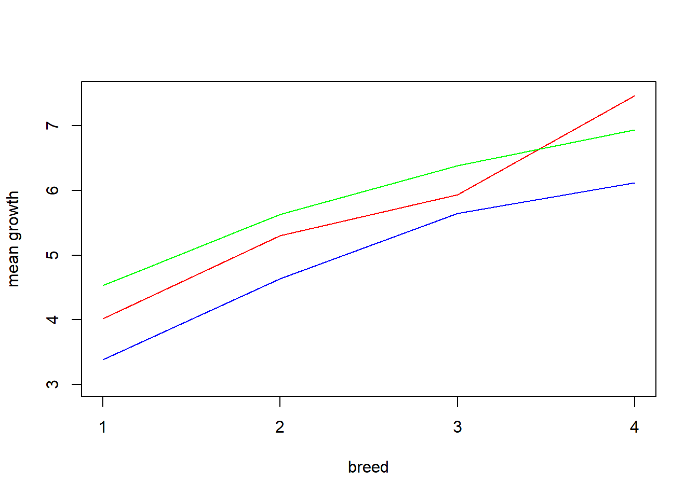

Chapter 12 Strategy for Analysis in Two-Factor models
In this section we synthesize the main points from our discussion of two-way ANOVA to outline a general strategy for analyzing data from two-factor experiments.
For experiments in which it is known that factors do not interact, comparisons for treatments are made on the basis of factor-level means \(\mu_{i\cdot}\) and \(\mu_{\cdot j}\):
3. If we reject \(H_0\), move to 4. Otherwise, perform follow-up comparisons of the factor level means \(\mu_{i\cdot}\). These comparisons may be pairwise, or more general contrasts, but should be corrected by Tukey’s or Scheff'e’s technique.
4. Test for significance of Factor B main effects, \(H_0:\tau_j = 0, \text{ for all }j\) versus \(H_a:\text{not all }\tau_j = 0\). And, again, if we reject \(H_0\), then perform corrected follow-up comparisons of \(\mu_{\cdot j}\)’s.
The above tests for main effects may be conducted using Type 1 sums of squares for balanced experiments, and Type 3 sums of squares (equivalently partial F tests) for unbalanced experiments. For experiments with one or more missing cells, fit a linear model (with extra constraint(s)) and test the main effects using partial F tests.
When interactions may be present, the analysis is more complicated.
1. Fit the model with interactions
\[Y_{ijk} = \mu+\alpha_i +\tau_j + (\alpha\tau)_{ij} + \epsilon_{jik},\]
and test for significance of the model using a partial F test comparing the intercept-only model to the full model. If the hypothesis \(H_0:\text{only the intercept is nonzero}\) is rejected, then move to step 2.
2. Test for significance of the interaction terms \(H_0:(\alpha\tau)_{ij} = 0 \text{ for all }i,j\) versus \(H_a:\text{not all }(\alpha\tau)_{ij}=0\).
3. If we reject \(H_0\), then perform any desired follow-up tests (CIs) for pairwise comparisons or contrasts of the crossed factor treatment means, the \(\mu_{ij}\)’s. For multiple such comparisons use Tukey or Scheff'e adjustments.
4. If we fail to reject the null hypothesis of no interaction, then carry out the tests for main effects. The test for Factor A main effects has null and alternative hypotheses \(H_0:\alpha_i = 0 \text{ for all }i\) versus \(H_a:\text{not all }\alpha_i = 0\). Likewise, the test for Factor B main effects has hypotheses \(H_0:\tau_j = 0, \text{ for all }j\) versus \(H_a:\text{not all }\tau_j = 0\).
5. For each test of main effects, if we reject the null hypothesis, then we may consider conducting follow-up tests to compare the factor-level mean responses, the \(\mu_{i\cdot}\)’s and/or \(\mu_{\cdot j}\)’s. For multiple such comparisons, again, use Tukey or Scheff'e corrections.
Remarks:
1. For the model fit with interaction terms, should we fail to reject the null hypothesis of no interaction, it is generally not appropriate to refit the model without interaction terms. Consider the following reasoning. We used some degrees of freedom (we used data) to estimate the interaction parameters, and we tested and found them to be insignificant. If we then refit the model without those terms, we reuse those degrees of freedom to estimate \(\sigma^2\); this is an overly optimistic quantification of uncertainty. And, it constitutes a statistical test performed using data conditional on the same data, which often can cause Type 1 error inflation. It is more honest to use the MSE from the full model, with the interaction effects, in all subsequent tests and CIs.
2. When we learn ANOVA we often start with sums of squares. These are especially useful in one-way ANOVA because the derivation of the F test as a comparison of variance estimators under null and alternative hypotheses about the treatment means (the \(\mu_i\)’s) is particularly instructive. However, once we encounter unbalanced data, sums of squares become far less useful. My advice is to always associate ANOVA-type tests with partial F tests, because these always “work”, while the sums of squares approach falls apart when we have unbalanced data and/or missing cells.
3. The two-factor model with one (or more) missing (at random) cell(s) is the most troublesome to analyze. There are (at least) three strategies for dealing with the missing cell. One is to simply treat the crossed treatments as a single “treatment” variable and perform one-way ANOVA. The second is to perform “partial-table” analyses. And the third, (and my personal favorite) is to use a multiple linear regression model with an additional constraint for each missing cell. For strategies 2 and 3 we again proceed by testing for interactions, and, if insignificant, testing for main effects. In all three strategies we may perform the appropriate, corrected, follow-up tests.
Let’s try out our general strategy using two examples, unbalanced data, and data with a missing cell. The case of balanced data is baseically the same as the unbalanced case.
12.1 Unbalanced Two-Factor Experiment: Chick Weight
Download chick.csvThe following data comes from an animal breeding experiment where chicks of different breeds are fed different diets and their weights are recorded. The data is unbalanced, but each combination of breeds and feeds is observed.
chickgrowth<- read.csv('chick.csv')
chickgrowth$feed<-as.factor(chickgrowth$feed)
chickgrowth$breed<-as.factor(chickgrowth$breed)
chickgrowth## X growth feed breed
## 1 1 3.31 1 1
## 2 2 3.48 1 1
## 3 3 3.36 1 1
## 4 4 3.92 1 2
## 5 5 5.26 1 2
## 6 6 4.72 1 2
## 7 7 5.56 1 3
## 8 8 5.75 1 3
## 9 9 5.62 1 3
## 10 10 6.12 1 4
## 11 11 4.35 2 1
## 12 12 3.69 2 1
## 13 13 5.91 2 2
## 14 14 4.77 2 2
## 15 15 5.22 2 2
## 16 16 5.57 2 3
## 17 17 6.20 2 3
## 18 18 6.03 2 3
## 19 19 7.28 2 4
## 20 20 7.34 2 4
## 21 21 7.77 2 4
## 22 22 4.65 3 1
## 23 23 4.42 3 1
## 24 24 5.39 3 2
## 25 25 5.87 3 2
## 26 26 6.45 3 3
## 27 27 6.32 3 3
## 28 28 7.22 3 4
## 29 29 6.65 3 4We begin our analysis with a model F test. Since the p-value basically zero we reject the null hypothesis that only the intercept term is non-zero. The interpretation is that at least one of the crossed treatments of breed-by-feed has a mean weight significantly different from the mean weights of the other breed-by-feed treatment groups.
full.model <- lm(growth~feed*breed, data = chickgrowth)
SSE.full <- sum(full.model$residuals^2)
int.model <- lm(growth~1, data = chickgrowth)
SSE.int <- sum(int.model$residuals^2)
n <- length(chickgrowth$growth)
F <- ((SSE.int - SSE.full) / 11) / (SSE.full/(n - 12))
1-pf(F,11,n-12)## [1] 2.478104e-08Therefore, we consider testing for interaction effects. (I should have mentioned that since we have no reason to suspect there are no interactions we, by default, include interactions in the full model.)
no.inter.model <- lm(growth~feed + breed, data = chickgrowth)
SSE.no.inter <- sum(no.inter.model$residuals^2)
F <- ((SSE.no.inter - SSE.full) / 6) / (SSE.full/(n - 12))
1-pf(F,6,n-12)## [1] 0.3159945Another way to perform the test is by using type 3 SS. Note we matched the p-value.
library(car)## Loading required package: carDataAnova(lm(growth~feed*breed, data = chickgrowth), type = 3)## Anova Table (Type III tests)
##
## Response: growth
## Sum Sq Df F value Pr(>F)
## (Intercept) 34.341 1 234.6172 2.220e-11 ***
## feed 1.636 2 5.5881 0.01364 *
## breed 9.899 3 22.5438 3.693e-06 ***
## feed:breed 1.128 6 1.2842 0.31599
## Residuals 2.488 17
## ---
## Signif. codes: 0 '***' 0.001 '**' 0.01 '*' 0.05 '.' 0.1 ' ' 1The test for interactions does not reject the null hypothesis of no interaction. This means the additive model fits the data just fine, and that all relevant comparisons may be performed using factor-level means, rather than crossed treatment means. However, keep hold of the MSE for the full model, as we will use this for subsequent follow-up tests…
The interaction plots below help illustrate why the interaction effects were not significant.
means <- aggregate(growth~feed*breed, data = chickgrowth, FUN=mean)
sub1 <- c(1,4,7,10)
sub2 <- c(2,5,8,11)
sub3 <- c(3,6,9,12)
plot(as.numeric(means[sub1,2]), means[sub1,3], type = 'l', xlab = 'breed', col = 'blue', ylab = 'mean growth', ylim = c(3.0,7.5), xaxt='n')
axis(side = 1, at = c(1,2,3,4))
lines(means[sub2,2], means[sub2,3], col = 'red')
lines(means[sub3,2], means[sub3,3], col = 'green')
Given we can assume interactions are not present, let’s test for main effects… Ope, we already have these from the Type III SS ANOVA results above! Based on the p-values (\(\approx 0.014\) and \(0.000004\)), both main effects are significant. So, it makes sense to conduct follow-up tests based on factor-level means. I don’t have any specific contrasts in mind to test, so I’ll simply conduct pairwise comparisons.
Given it seems that breed and feed effects are additive/separable, the experimenters will likely make recommendations about breed and feed based on comparisons between levels of breeds and comparisons between levels of feed. Therefore, Tukey corrections for feed and for breed separately make the most sense. What I’m saying is that there are not likely to be decisions based on breed-feed comparisons jointly, so we can correct for comparing 3 pairs within feed and 6 pairs within breed separately.
Just for brevity, I’ll only compute one Tukey-corrected pairwise comparison “by hand”. Note, I match the p-value and the LS means computed using the emmeans package. However, I do not match the “t.ratio” in the table initially. The “t.ratio” in the table does not include the \(\frac{1}{\sqrt{2}}\) factor in the margin of error necessary for comparing to Tukey quantiles… That’s fine, just be careful you know exactly what you’re looking at.
Based on the results, if the experimenters are interested in the breed and feed combinations with highest weight (which makes sense) then we see breed 4 has highest weight, and feeds 2 and 3 have higher weight than feed 1, although 2 and 3 are not distinguishable. The conclusion of this experiment is that feed and breed factors largely have additive effects on weight, and that breed 4 and feeds 2 and 3 seem to produce the highest weight chicks.
MSE <- (SSE.full/(n - 12))
means <- aggregate(growth~feed*breed, data = chickgrowth, FUN=mean)
LS.means.feed1 <- 0.25*(means[1,3]+means[4,3]+means[7,3]+means[10,3])
n11 <- sum(chickgrowth$feed==1 & chickgrowth$breed==1)
n12 <- sum(chickgrowth$feed==1 & chickgrowth$breed==2)
n13 <- sum(chickgrowth$feed==1 & chickgrowth$breed==3)
n14 <- sum(chickgrowth$feed==1 & chickgrowth$breed==4)
LS.means.feed2 <- 0.25*(means[2,3]+means[5,3]+means[8,3]+means[11,3])
n21 <- sum(chickgrowth$feed==2 & chickgrowth$breed==1)
n22 <- sum(chickgrowth$feed==2 & chickgrowth$breed==2)
n23 <- sum(chickgrowth$feed==2 & chickgrowth$breed==3)
n24 <- sum(chickgrowth$feed==2 & chickgrowth$breed==4)
tukey.feed12 <- (LS.means.feed1-LS.means.feed2) / ((1/sqrt(2))*sqrt(MSE*(1/16)*(1/n11+1/n12 + 1/n13 + 1/n14+1/n21+1/n22 + 1/n23 + 1/n24)))
tukey.feed12## [1] -5.8024341-ptukey(abs(tukey.feed12), 3, n-12)## [1] 0.002031653t.ratio <- (LS.means.feed1-LS.means.feed2) / (sqrt(MSE*(1/16)*(1/n11+1/n12 + 1/n13 + 1/n14+1/n21+1/n22 + 1/n23 + 1/n24)))
t.ratio## [1] -4.10294library(emmeans)
em.feed <- emmeans(lm(growth~feed*breed, data = chickgrowth), c('feed'))## NOTE: Results may be misleading due to involvement in interactionsem.feed## feed emmean SE df lower.CL upper.CL
## 1 4.95 0.135 17 4.66 5.23
## 2 5.68 0.117 17 5.43 5.93
## 3 5.87 0.135 17 5.59 6.16
##
## Results are averaged over the levels of: breed
## Confidence level used: 0.95pairs(em.feed, adjust = 'tukey')## contrast estimate SE df t.ratio p.value
## feed1 - feed2 -0.734 0.179 17 -4.103 0.0020
## feed1 - feed3 -0.926 0.191 17 -4.842 0.0004
## feed2 - feed3 -0.192 0.179 17 -1.073 0.5427
##
## Results are averaged over the levels of: breed
## P value adjustment: tukey method for comparing a family of 3 estimatesem.breed <- emmeans(lm(growth~feed*breed, data = chickgrowth), c('breed'))## NOTE: Results may be misleading due to involvement in interactionsem.breed## breed emmean SE df lower.CL upper.CL
## 1 3.98 0.147 17 3.67 4.29
## 2 5.19 0.138 17 4.90 5.48
## 3 5.99 0.138 17 5.70 6.28
## 4 6.84 0.173 17 6.48 7.20
##
## Results are averaged over the levels of: feed
## Confidence level used: 0.95pairs(em.breed, adjust = 'tukey')## contrast estimate SE df t.ratio p.value
## breed1 - breed2 -1.208 0.202 17 -5.993 0.0001
## breed1 - breed3 -2.008 0.202 17 -9.957 <.0001
## breed1 - breed4 -2.860 0.227 17 -12.603 <.0001
## breed2 - breed3 -0.799 0.195 17 -4.104 0.0037
## breed2 - breed4 -1.652 0.221 17 -7.478 <.0001
## breed3 - breed4 -0.852 0.221 17 -3.858 0.0063
##
## Results are averaged over the levels of: feed
## P value adjustment: tukey method for comparing a family of 4 estimates12.2 Example: observational study on growth-hormone deficient children with empty cell
From Applied Linear Statistical Models (Fifth Edition) by Kutner et al.:
“Synthetic growth hormone was administered at a cI inical research center to growth hormone deficient, short children who had not yet reached pubel1y. The investigator was interested in the effects of a child’s gender (Factor A) and bone development (Factor B) on the rate of growth induced by hormone administration. A child’s bone development was classified into one of three categories: severely depressed, moderately depressed, mildly depressed. Three children were randomly selected for each gender-bone development group. The response variable (Y) of interest was the difference between the growth rate during growth hormone treatment and the normal growth rate prior to the treatment, expressed in centimeters per month. Four of the 18 children were unable to complete the year-long study, thus creating unequal treatment sample sizes. Note that this is an observational study. All children received the same hormone therapy, and, subsequently, changes in growth rates were observed for children in each bone development-by-gender category. No randomization of treatments to subjects was employed.”
We will examine a modified data set where an additional (fifth) response is missing so that we have an empty cell; in particular, the Female-Severely depressed combination is unobserved.
| Sex | Bone Development Depression | Mean(n) |
|---|---|---|
| Male | Severe | 2.0(3) |
| Male | Moderate | 1.9(2) |
| Male | Mild | 0.9(2) |
| Female | Severe | – |
| Female | Moderate | 2.1(3) |
| Female | Mild | 0.9(3) |
response <- c(1.4,2.4,2.2,2.1,1.7,0.7,1.1,2.5,1.8,2.0,0.5,0.9,1.3)
bone <- c('severe','severe','severe','moderate','moderate','mild','mild','moderate','moderate','moderate','mild','mild','mild')
sex <- c('male','male','male','male','male','male','male','female','female','female','female','female','female')
growth <- data.frame(response = response, bone = bone, sex = sex)12.2.1 Linear Model analysis with extra constraint
If we impose sum-to-zero constraints, and remove the interaction corresponding to the missing cell, then we can analyze the available data using one linear model.
Since there are a total of 5 cell means, we should have 5 regression parameters, 1 intercept, 2 for bone, 1 for sex, and 1 interaction term. I have chosen to design my own interaction term, which contrasts the mal-female difference in the moderate bone group to the male female difference in the mild bone group. If there is no interaction, these differences should be the same (because they are additive in sex and bone effects). Specifically, the interaction term I am testing is
\[(\mu_{21}-\mu_{22}) - (\mu_{31} - \mu_{32})\]
where the first index \(i\) denotes sex (\(i=1\) male and \(i=2\) female) and the second index \(j\) denotes bone (\(j=1\) severe, \(j=2\) moderate, \(j = 3\) mild).
options(contrasts = c('contr.sum', 'contr.sum'))
X.full <- model.matrix(response ~ bone*sex, data = growth)
X.obs <- X.full[,1:4]
X.obs <- cbind(X.obs,c(0,0,0,1,1,-1,-1,-1,-1,-1,1,1,1))
solve(t(X.obs)%*%X.obs)%*%t(X.obs)## 1 2 3 4 5
## (Intercept) 1.111111e-01 1.111111e-01 1.111111e-01 0.04166667 0.04166667
## bone1 -1.111111e-01 -1.111111e-01 -1.111111e-01 -0.04166667 -0.04166667
## bone2 -1.111111e-01 -1.111111e-01 -1.111111e-01 0.20833333 0.20833333
## sex1 1.387779e-17 1.387779e-17 1.387779e-17 -0.12500000 -0.12500000
## 0.000000e+00 0.000000e+00 0.000000e+00 0.12500000 0.12500000
## 6 7 8 9 10
## (Intercept) 0.04166667 0.04166667 0.08333333 0.08333333 0.08333333
## bone1 0.20833333 0.20833333 -0.08333333 -0.08333333 -0.08333333
## bone2 -0.04166667 -0.04166667 0.08333333 0.08333333 0.08333333
## sex1 -0.12500000 -0.12500000 0.08333333 0.08333333 0.08333333
## -0.12500000 -0.12500000 -0.08333333 -0.08333333 -0.08333333
## 11 12 13
## (Intercept) 0.08333333 0.08333333 0.08333333
## bone1 0.08333333 0.08333333 0.08333333
## bone2 -0.08333333 -0.08333333 -0.08333333
## sex1 0.08333333 0.08333333 0.08333333
## 0.08333333 0.08333333 0.08333333Using this design I can test for interaction using a partial F test. The p-value is 0.711 which implies there is no significant interaction. Be careful about what this test is saying. The interaction term compares responses over sex and mild to moderate bone development disorder. Since we lack data for female-severe, we cannot say whether or not some interaction may occur for that level of bone development disorder.
n <- nrow(X.obs)
p <- ncol(X.obs)
hat.beta <- solve(t(X.obs)%*%X.obs)%*%t(X.obs)%*%matrix(response, n,1)
hat.beta## [,1]
## (Intercept) 1.65
## bone1 -0.75
## bone2 0.35
## sex1 0.05
## -0.05SSE.obs <- sum((matrix(response, n,1) - X.obs%*%hat.beta)^2)
X.nointeraction <- X.obs[,1:4]
hat.beta.nointer <- solve(t(X.nointeraction)%*%X.nointeraction)%*%t(X.nointeraction)%*%matrix(response, n,1)
SSE.nointer <- sum((matrix(response, n,1) - X.nointeraction%*%hat.beta.nointer)^2)
F <- ((SSE.nointer - SSE.obs)/1)/(SSE.obs/(n-p))
F## [1] 0.14769231-pf(F,1,n-p)## [1] 0.7107643Given the only testable interaction is not significant, we move on to examining the main effects. The first estimated main effect for bone is given by
\[-1/9Y_1 -1/9Y_2 -1/9Y_3 -1/24Y_4 - 1/24Y_5 +5/24Y_6 + 5/24Y_7 -1/12Y_8 - 1/12Y_9 - 1/12Y_10 + 1/12Y_11 + 1/12Y_12 + 1/12Y_13.\]
This is an estimate of the following contrast:
\[-1/3\mu_{11}-1/12\mu_{21}+5/12\mu_{31} + 1/4(\mu_{22}-\mu_{32})\]
The difference \(\mu_{22}-\mu_{32}\) is the difference in mean response for females in groups moderate and mild. If there is no difference between bone groups (no bone effects) then this difference should be zero because both are average female responses. Likewise, if there are no bone effects, then \(-1/3\mu_{11}-1/12\mu_{21}+5/12\mu_{31}\) simplifies to a linear combination of \(\mu_\cdot 1\), the average male response; and that linear combination is \(-1/3\mu_{\cdot 1}-1/12\mu_{\cdot 1}+5/12\mu_{\cdot 1} = 0\).
The partial F test for bone effect is significant; there are significant difference in mean growth between treated and untreated periods depending on one’s severity of bone under-development.
X.nobone <- X.obs[,-(2:3)]
hat.beta.nobone <- solve(t(X.nobone)%*%X.nobone)%*%t(X.nobone)%*%matrix(response, n,1)
SSE.nobone <- sum((matrix(response, n,1) - X.nobone%*%hat.beta.nobone)^2)
F <- ((SSE.nobone - SSE.obs)/2)/(SSE.obs/(n-p))
F## [1] 10.834291-pf(F,1,n-p)## [1] 0.01099661There is not a significant difference in mean bone growth between sexes.
X.nosex <- X.obs[,-4]
hat.beta.nosex <- solve(t(X.nosex)%*%X.nosex)%*%t(X.nosex)%*%matrix(response, n,1)
SSE.nosex <- sum((matrix(response, n,1) - X.nosex%*%hat.beta.nosex)^2)
F <- ((SSE.nosex - SSE.obs)/1)/(SSE.obs/(n-p))
F## [1] 0.14769231-pf(F,1,n-p)## [1] 0.7107643Now, which means should we compare? Since only bone is significant we should compare the three bone under-development levels pairwise. However, we should consider whether or not it makes sense to compare the LS mean response for sever bone under-development considering it only contains male responses. In this case, since sex is not significant, I think it is reasonable to make comparisons of severe to moderate and severe to mild. However, if sex was significant, then such comparisons would not make sense as there would be no females to average over within the severe category.’
The mild bone underdevelopment group is significantly different from the moderate and severe groups, but the latter two are not distinguishable.
MSE <- SSE.obs/(n-p)
LS.bone <- c(2,2,0.9)
ratio.12 <- 0
ratio.13 <- 1.1/sqrt(MSE*(1/2)*(1/3+(1/4)*(1/2+1/3)))
ratio.23 <- 1.1/sqrt(MSE*(1/2)*(1/4)*(1/2+1/3+1/2+1/3))
p12 <- 1-ptukey(ratio.12, 3, n-p)
p12## [1] 1p13 <- 1-ptukey(ratio.13, 3, n-p)
p13## [1] 0.01467942p23 <- 1-ptukey(ratio.23, 3, n-p)
p23## [1] 0.0072033212.2.2 Partial Table analysis
An alternative strategy is to consider partial table analyses. On table consists of male and female at levels moderate and mild. The second, overlapping table is all male cells (severe, moderate, mild). In the first, two-by-two table, we may assess interaction. If interaction is present, then we should compare all 5 cell means. If not, we test main effects to determine if male-female comparisons are relevant, and if moderate-mild comparisons are relevant. Using the second, three-by-one table of only male responses, we can compare severe-moderate-mild within males, if desired.
Below, we fit the linear model to the partial table of male-female, moderate-mild responses. The interaction term is given by
\[(\mu_{22}-\mu_{21}) - (\mu_{32}-\mu_{31})\]
which is the mean growth for (female:moderate - male:moderate)-(female:mild - male:mild). If there is no interaction, then the female to male difference is the same at levels moderate and mild, so this contrast of means would be equal to zero. Since the interaction is found to be insignificant, we move on to main effects.
As in the full data analysis above, sex is not significant. I think this fact makes it less clear, rather than more clear, how to proceed. Since sex is not significant and bone under-development is significant, it makes sense to compare mean responses between levels of the bone factor, averaged over sex (LS means). However, now we must choose which table to use. We can compare LS means in the \(2\times 2\) partial table, or in the \(3\times 1\) table of only male responses, or we can go back to the full data and compare LS means for the bone factor using all the data. The third option matches the full data analysis from above, and makes sense given that sex is not significant. One advantage of the partial table analysis is that if sex is significant, it does not make sense to compare LS means of the bone factor because one of those contains no females; therefore, a partial table analysis seems necessary. In the present case, I would advocate for the full data analysis, comparing LS means of bone considering sex is not significant, in which case the rest of the analysis is the same as above.
growth2 <- growth[4:n,]
growth2$bone = factor(growth2$bone, levels = unique(growth2$bone))
library(car)
my.lm<-lm(response~bone*sex, data = growth2)
Anova(my.lm)## Anova Table (Type II tests)
##
## Response: response
## Sum Sq Df F value Pr(>F)
## bone 3.136 1 25.4270 0.002351 **
## sex 0.024 1 0.1946 0.674571
## bone:sex 0.024 1 0.1946 0.674571
## Residuals 0.740 6
## ---
## Signif. codes: 0 '***' 0.001 '**' 0.01 '*' 0.05 '.' 0.1 ' ' 1summary(my.lm)##
## Call:
## lm(formula = response ~ bone * sex, data = growth2)
##
## Residuals:
## Min 1Q Median 3Q Max
## -0.40 -0.20 -0.05 0.20 0.40
##
## Coefficients:
## Estimate Std. Error t value Pr(>|t|)
## (Intercept) 1.4500 0.1134 12.793 1.4e-05 ***
## bone1 0.5500 0.1134 4.852 0.00284 **
## sex1 0.0500 0.1134 0.441 0.67457
## bone1:sex1 0.0500 0.1134 0.441 0.67457
## ---
## Signif. codes: 0 '***' 0.001 '**' 0.01 '*' 0.05 '.' 0.1 ' ' 1
##
## Residual standard error: 0.3512 on 6 degrees of freedom
## Multiple R-squared: 0.8114, Adjusted R-squared: 0.7171
## F-statistic: 8.605 on 3 and 6 DF, p-value: 0.01359X <- model.matrix(response~bone*sex, data = growth2)
solve(t(X)%*%X)%*%t(X)## 4 5 6 7 8 9 10
## (Intercept) 0.125 0.125 0.125 0.125 0.08333333 0.08333333 0.08333333
## bone1 0.125 0.125 -0.125 -0.125 0.08333333 0.08333333 0.08333333
## sex1 -0.125 -0.125 -0.125 -0.125 0.08333333 0.08333333 0.08333333
## bone1:sex1 -0.125 -0.125 0.125 0.125 0.08333333 0.08333333 0.08333333
## 11 12 13
## (Intercept) 0.08333333 0.08333333 0.08333333
## bone1 -0.08333333 -0.08333333 -0.08333333
## sex1 0.08333333 0.08333333 0.08333333
## bone1:sex1 -0.08333333 -0.08333333 -0.08333333